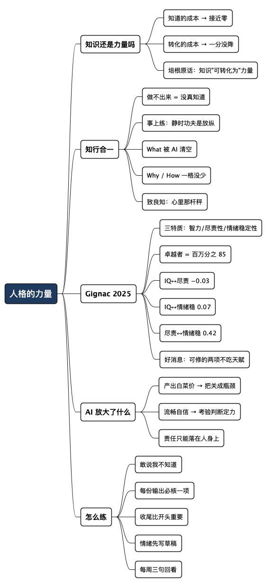

人格的力量：知识不再稀缺之后，靠什么立得住
Posted on 六 05 9月 2026 in Journal
| Abstract | 人格的力量：知识不再稀缺之后，靠什么立得住 |
|---|---|
| Authors | Walter Fan |
| Category | Journal |
| Version | v1.0 |
| Updated | 2026-09-05 |
| License | CC-BY-NC-ND 4.0 |
大纲
展开看看
- 知识贬值了吗：知道的成本降到零，转化的成本一分没降
- 培根那句话被砍掉了半截：原话讲的是"知识可以转化为力量"，不是"知道就有力量"
- 王阳明早就说透了：知不只是 What，还有 Why 和 How；事上练与致良知
- Gignac 2025 的数据：智商、尽责性、情绪稳定性同时优秀的人有多稀有，以及三个相关系数里藏着的好消息
- 为什么 AI 恰好放大了这两样：把关成为瓶颈，判断力比产出更贵
- 怎么练：五个可以从明天开始的动作
- 总结 + 行动清单 + 思维导图
以前遇到一个不懂的技术问题，我的路径是：翻书、搜论坛、问老同事，运气不好要耗一天。现在打开对话框，三十秒就能拿到一份条理清楚的答案，带代码、带对比、带注意事项，讲得比我当年请教的那位老同事还全。
那"知识就是力量"这句话，还成立吗？
我的答案是：这句话从来不是"知道就有力量"的意思，只是过去几百年里"知道"太难，我们才把它误读成了那样。 AI 把"知道"这一环的成本压到接近零，顺手也把这个误读给捅破了。剩下没被压掉的那部分——判断、担责、做完、扛住——恰恰是过去被"知道很难"这层壳挡住的东西。
培根那句话，被砍掉了半截
"知识就是力量"通常被归到英国哲学家弗朗西斯·培根名下，但他没写过这六个字。1597 年的《圣沉思》（Meditationes Sacrae）里，他的原话是拉丁文 ipsa scientia potestas est——"知识本身即是力量"。1620 年的《新工具》里说得更清楚：人的知识与人的力量归于一，通向力量的路和通向知识的路紧挨着。压成 scientia potentia est 这个精确短语，最早出现在霍布斯 1668 年的拉丁文版《利维坦》里——霍布斯年轻时当过培根的秘书。
"紧挨着"和"是一回事"，差别就在这儿。培根说的是知识可以转化为改变现实的能力，重点在"转化"这个动词上。他那个年代，转化的难点在前半段：你根本不知道该怎么办。所以只要"知道"了，力量基本就到手了，转化那一步近乎自动完成。
今天前半段被 AI 打通了，后半段的成本一分没降。你知道一个系统该怎么设计，跟你能把它落地、跟对齐几个部门的利益、跟出了故障半夜爬起来定位，还是三件事。
知识的稀缺性没了，但知识和力量之间那条通道，还是得一个人自己走过去。
王阳明早就把这段说透了
明代那位王阳明讲"知行合一"，很多人以为是"既要学又要做"的意思，那是把它讲小了。他的原意更锋利：做不出来，就说明你根本没真知道。 知和行不是两件要凑在一起的事，是同一件事的两面。
《传习录·陈九川录》里有段对话，我觉得比任何鸡汤都实在。弟子陈九川抱怨：静坐用功时觉得心是收敛的，一遇到事就断了，事情过去再回头找原来的功夫，总觉得心里有内外之分，打不成一片。
王阳明回他：
人须在事上磨炼，做功夫乃有益。若只好静，遇事便乱，终无长进。那静时功夫亦差似收敛，而实放溺也。 大白话：本事得在真事上磨出来。只喜欢在安静的时候琢磨，一碰上事就慌，那是永远不会长进的。你静下来时那点自我感觉良好，看着像修养，其实是放纵。
把这段话翻到今天的场景，就是：看完一份 AI 生成的完美方案，你觉得自己懂了，那种感觉正是"静时功夫"。 它看着像收敛，其实是放纵——因为它一次都没有被现实检验过。
所以王阳明说的"知"，从来不只是 What。按 What / Why / How 拆开看，AI 帮你到哪一步，一目了然：
| 层次 | 具体是什么 | AI 能给到什么程度 | 还得你自己来的部分 |
|---|---|---|---|
| What | 这个概念是什么、有哪些做法 | 几乎全给你，而且比大多数人整理得好 | 基本没有了 |
| Why | 为什么这么设计、代价在哪、什么情况下不该这么干 | 能给通用理由，给不了你这一摊事的理由 | 你的约束、你的历史包袱、你要背的锅 |
| How | 在你这个具体场景怎么落地、怎么收尾 | 能给模板和步骤 | 谁来对齐、谁来兜底、出错了谁半夜起床 |
AI 把 What 那一列几乎清空了。Why 和 How 那两列，一格都没少。
王阳明另一个说法是"致良知"。良知在他那里不是什么玄学，就是每个人心里那杆是非秤——见父自然知孝，见人落井自然知恻隐，不用外求。"致"是个动词：把心里那杆秤推到底，按它去做，别拿"我也是没办法"糊弄自己。放到今天，最日常的一幕就是：AI 给了一份跑得通但你心里知道有问题的方案，你交不交上去。 那一秒钟的选择，跟你懂多少技术无关。
一篇 2025 年的论文，和一个意外的好消息
澳大利亚西澳大学的 Gilles E. Gignac 在 2025 年 2 月发表了一篇短论文，题目很直白：《The number of exceptional people: Fewer than 85 per 1 million across key traits》（《卓越者有多少：跨关键特质不足百万分之八十五》，Personality and Individual Differences, Vol. 234, 112955）。
他挑的是既有研究里公认最能预测工作表现的三个个体差异变量：
- 智力（intelligence）——学得快不快、想得清不清。
- 尽责性（conscientiousness）——大五人格里的一个维度，说白了就是靠不靠得住：说到做到、有条理、肯把活干完、不半途撒手。
- 情绪稳定性（emotional stability）——大五人格里神经质的反面：压力下不失态、挫折后能回弹、不把情绪甩给别人。
然后他做了件挺聪明的事：模拟出两千万个人，按这三项的实际相关关系分布，数一数同时在三项上都很高的人有多少。分成四档，结果是这样：
| 档位 | 门槛（三项同时） | 占比 | 相当于 |
|---|---|---|---|
| 值得注意 notable | 都在平均以上 | 16.27% | 六个人里一个 |
| 出类拔萃 remarkable | 都高出平均一个标准差 | 0.94% | 一百人里一个 |
| 卓越 exceptional | 都高出平均两个标准差 | 0.0085% | 一百万人里 85 个 |
| 极度卓越 profoundly exceptional | 都高出平均三个标准差 | 约 0.000005% | 两千万人里 1 个 |
（"高出一个标准差"可以粗略理解为单项排在前 16%，"两个标准差"是单项前 2.3% 左右。）
论文自己的结论是给招聘用的：那种"要绝顶聪明、极其可靠、还情绪极稳"的岗位描述，本质上是在招独角兽，找不到别怪市场；反过来，哪怕只是三项都略高于平均的人，也已经很稀缺了，值得被好好对待。
不过对我来说，这篇论文最有意思的不是那 85 个人，是它用来跑模拟的三个相关系数：
- 智力 ↔ 尽责性：−0.03
- 智力 ↔ 情绪稳定性：0.07
- 尽责性 ↔ 情绪稳定性：0.42
前两个数字接近零，意思是：聪明和靠得住、聪明和情绪稳，基本没关系。 聪明人未必靠谱，这不是刻薄的偏见，是数据。而反过来更要紧——你智商一般，完全不妨碍你在另外两项上做到很高。 那两项不吃天赋这口饭。
第三个数字是 0.42，一个相当强的正相关：尽责和情绪稳的人，往往是同一批人。这也符合直觉——把事情安排得井井有条的人，本来就不容易被突发状况打乱；而心里稳的人，才有余力把活干完。它们更像同一块地基的两面，而不是两项独立的技能。
这个相关系数还带来一个反直觉的推论。如果三项彼此独立，按正态分布算，"三项都在两个标准差以上"应该是 0.023 的三次方，大约百万分之十二。而论文模拟出来是百万分之八十五，高出七倍——多出来的那部分，几乎全是尽责性和情绪稳定性之间那个 0.42 贡献的。换句话说，你在这两项上的投入不是各算各的，是会互相托举的。（这一步是我按论文给的参数自己算的，不是论文的结论，有兴趣可以自己验一下。）
为什么 AI 恰好把这两样顶上来了
尽责性和情绪稳定性这两个词听着像家长评语，放到 AI 时代的日常里就一点不虚了。
AI 把产出的成本压到接近零，瓶颈就整体移到了把关和收尾上。 一个下午能生成的方案、代码、文案、报告，比过去一周还多。多出来的这些东西，价值全取决于有没有人真去核过、真去收过尾。要不要读完那 800 行、要不要跑一遍那三个边界条件、要不要承认这段自己没看懂——每一个都是尽责性的选择题，而且每一个都很容易蒙过去，因为东西看起来是对的。AI 让"看起来对"变得极其廉价，也就让"真的对"变得极其值钱。
AI 的输出永远流畅、永远自信，这恰好在考验情绪稳定性。 它不会说"这块我不确定"，它会用同样端正的语气给你一个错答案。人在这种流畅面前很容易松掉判断——不是因为笨，是因为累，是因为怀疑它要花力气而相信它不花力气。能在一份漂亮的答案面前停三秒问一句"凭什么"，本质上是一种情绪能力，不是智力能力。 同一件事的另一面：项目翻车时不迁怒、评审被挑刺时不炸毛、承认"这个是我的错"——这些从来不靠聪明。
再往前想一步。这两样东西还有个别的优势：AI 学不来。 不是技术上学不来，是结构上学不来——尽责性和情绪稳定性的意义在于有人为结果负责。AI 可以模仿细致的语气，可以生成一份完美的检查清单，但它签不了字，出事之后没人能找它。责任只能落在人身上，这一点跟模型多强没关系。
怎么练：五个明天就能开始的动作
王阳明的方法论就四个字：事上练。不是找个安静的地方修心，是在你手上正在做的这摊事上磨。落到具体动作：
-
把"我不知道"练成一句能出口的话。 在会上、在文档里、在 review 里，把"这块我没弄明白，我去查"说出来。这句话比任何自信的胡扯都值钱，而且说过三次以后就不难说了。它同时练两样：诚实（尽责）和不怕丢脸（情绪稳）。
-
给 AI 的每份输出定一个必核项。 不用全核，那不现实。但每次至少挑一个——最关键的那个数字、最容易错的那个边界、你心里最没底的那一段——亲自跑一遍或查一遍。要点是把"核"变成流程里的一格，不是靠当天心情。
-
收尾比开头重要。 靠不靠得住这件事，别人不是从你怎么开始判断的，是从你怎么结束判断的：那个 TODO 有没有清、那个临时方案有没有回来收、那封该发的邮件有没有发。AI 时代能一键开始的事情太多了，收尾成了少数还得手工做的活儿。
-
在情绪起来的那一刻，先记下来，别先发出去。 被否掉、被误解、被抢功的时候，把想说的话写在草稿里，隔两小时再看。你会删掉大半。这不是压抑，是给判断力留一个窗口——十次里有九次，两小时后的你比当时的你聪明。
-
每周一次事后回看，只问三句。 哪件事我做完了、哪件事我留了尾巴、哪一刻我情绪压过了判断。三句话，五分钟，写在哪儿都行。这是最省事的"事上练"——比读十篇方法论有用，因为练的是你自己的那摊事。
一句话：
不用比 AI 懂得多，那条路已经堵了；要比 AI 更值得被托付。 边界也说清楚：这不是"知识不重要了"。没有知识你连该核哪一项都不知道——知识是入场券，只是它不再是护城河。
总结：知识让你拥有力量，人格让你获得尊重
AI 抹平的是"知道"，抹不平的是"做到"和"担着"。这两件事在王阳明那里是一回事，叫知行合一；在 Gignac 的数据里也是一回事，叫尽责性和情绪稳定性——相关系数 0.42，同一块地基的两面，而且几乎不吃智商这口饭。
智商是发下来的牌，改不动。人格是可以一直修的那部分，而它恰好是 AI 越强越显眼的那部分。别人尊重你，从来不是因为你知道得多——那件事现在人人都能办到；是因为把事交给你，他放心。
行动清单
- [ ] 这周找一个场合，把"这块我不知道"说出口
- [ ] 给自己定一条规矩：AI 的每份输出，至少亲自核一项
- [ ] 翻一遍手头的 TODO，挑一个欠得最久的收掉
- [ ] 情绪上来时先写草稿，隔两小时再决定发不发
- [ ] 周五留五分钟，问那三句话：做完了什么、留了什么尾巴、哪一刻情绪压过了判断
全文思维导图
@startmindmap
<style>
mindmapDiagram {
node {
BackgroundColor #F8F9FA
RoundCorner 10
Padding 10
FontSize 13
}
:depth(0) {
BackgroundColor #1E3A5F
FontColor white
FontSize 18
FontStyle bold
}
:depth(1) {
FontSize 15
FontStyle bold
}
:depth(2) {
FontSize 13
}
}
</style>
* 人格的力量
** 知识还是力量吗
*** 知道的成本 → 接近零
*** 转化的成本 → 一分没降
*** 培根原话：知识"可转化为"力量
** 知行合一
*** 做不出来 = 没真知道
*** 事上练：静时功夫是放纵
*** What 被 AI 清空
*** Why / How 一格没少
*** 致良知：心里那杆秤
** Gignac 2025
*** 三特质：智力/尽责性/情绪稳定性
*** 卓越者 = 百万分之 85
*** IQ↔尽责 −0.03
*** IQ↔情绪稳 0.07
*** 尽责↔情绪稳 0.42
*** 好消息：可修的两项不吃天赋
** AI 放大了什么
*** 产出白菜价 → 把关成瓶颈
*** 流畅自信 → 考验判断定力
*** 责任只能落在人身上
** 怎么练
*** 敢说我不知道
*** 每份输出必核一项
*** 收尾比开头重要
*** 情绪先写草稿
*** 每周三句回看
@endmindmap

扩展阅读
- Gignac, G. E. (2025). The number of exceptional people: Fewer than 85 per 1 million across key traits. Personality and Individual Differences, 234, 112955. doi:10.1016/j.paid.2024.112955
- 论文摘要与模拟参数（西澳大学机构库）：research-repository.uwa.edu.au
- 王阳明《传习录》，卷上"陆澄录"与卷下"陈九川录"——"事上磨炼"的两段原始出处
- Francis Bacon, Novum Organum (1620) — "人的知识与人的力量归于一"的原始论述
本作品采用知识共享署名-非商业性使用-禁止演绎 4.0 国际许可协议进行许可。 欢迎在我的个人网站 https://www.fanyamin.com 访问原文并评论。